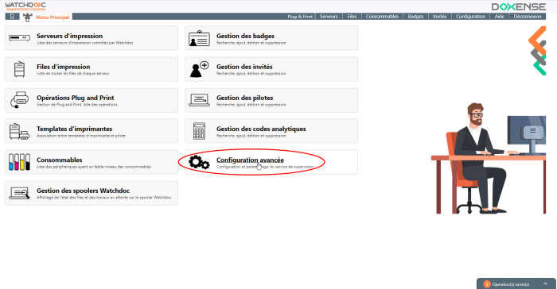
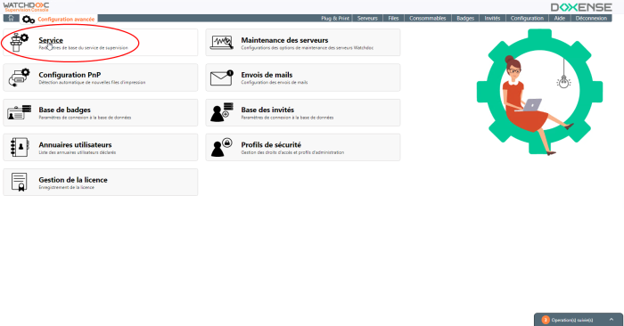
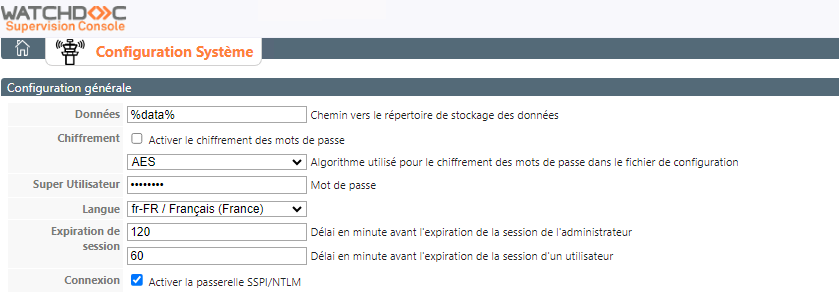
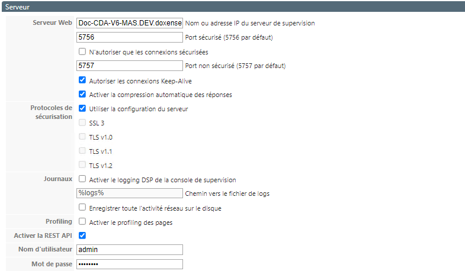
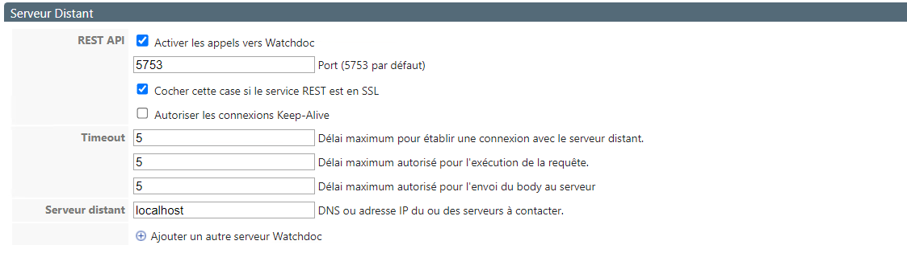
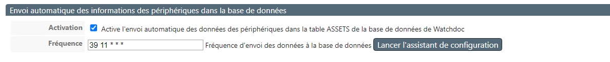
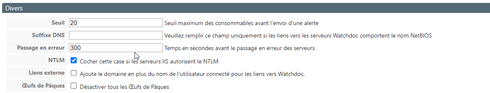

Principe
Lors de l'installation de Watchdoc et de son installation, la Console de Supervision est configurée par défaut.
Vous pouvez avoir besoin de modifier certains paramètres de configuration.
Accéder à l'interface de configuration
-
Depuis le Menu principal de WSC, cliquez sur bouton Configuration avancée :

-
Dans l'interface Configuration avancée, cliquez sur Service :

→ Vous accédez à l'interface Configuration Système.
Les champs sont remplis à l'aide des paramètres indiqués lors de l'installation initiale à l'aide de l'assistant. Modifiez ou complétez ces paramètres si nécessaire.
Une fois les modifications apportées, sauvegardez-les en cliquant sur Enregistrer les modifications en fin de page.
Configurez le système
Section Configuration générale
-
Données : par défaut, les données de WSC sont enregistrées dans un dossier préconfiguré. Si vous souhaitez enregistrer les données dans un autre dossier, indiquez le chemin vers ce dossier dans le champ :
-
Obfuscation : cochez la case pour activer l'obfuscation des mots de passe d'accès à WSC et sélectionnez dans la liste suivante l'algorithme utilisé pour le chiffrement.
-
Super Utilisateur : le Super Utilisateur est un administrateur disposant du droit d'accéder à l'interface d'administration en mode maintenance et habilité, de ce fait, à modifier toute la configuration de WSC. Saisissez dans ce champ le mot de passe permettant d'accéder à l'interface d'administration en tant que Super Utilisateur.
-
Langue : dans la liste, sélectionnez la langue d'utilisation de WSC ;
-
Expiration de session : IP : complétez les champs pour indiquer, en minutes le délai au-delà duquel la session d'administration et la session d'utilisation doivent expirer. Au-delà, les administrateurs ou utilisateurs devront s'authentifier de nouveau.
-
Connexion : cochez la case pour activer la passerelle SSPI
 Interface du fournisseur de support de sécurité (Security Support Provider Interface). L'interface SSPI est une interface universelle, normalisée par l'industrie, pour les applications distribuées sécurisées.
(Source : https://learn.microsoft.com/)/NTLM L’authentification NTLM désigne un ensemble de protocoles d’authentification inclus dans la bibliothèque Windows Msv1_0.dll. Les protocoles d’authentification NTLM comprennent les versions 1 et 2 de LAN Manager et les versions 1 et 2 de NTLM.
Ils ont pour but d’authentifier des utilisateurs et des ordinateurs sur la base d’un mécanisme de stimulation/réponse destiné à prouver à un serveur ou un contrôleur de domaine qu’un utilisateur connaît le mot de passe associé à un compte. (Source : https://learn.microsoft.com/fr-fr/windows-server/security/kerberos/ntlm-overview) de manière à ce que l'opérateur/administrateur puisse se connecter à l'aide de son compte de domaine :
Interface du fournisseur de support de sécurité (Security Support Provider Interface). L'interface SSPI est une interface universelle, normalisée par l'industrie, pour les applications distribuées sécurisées.
(Source : https://learn.microsoft.com/)/NTLM L’authentification NTLM désigne un ensemble de protocoles d’authentification inclus dans la bibliothèque Windows Msv1_0.dll. Les protocoles d’authentification NTLM comprennent les versions 1 et 2 de LAN Manager et les versions 1 et 2 de NTLM.
Ils ont pour but d’authentifier des utilisateurs et des ordinateurs sur la base d’un mécanisme de stimulation/réponse destiné à prouver à un serveur ou un contrôleur de domaine qu’un utilisateur connaît le mot de passe associé à un compte. (Source : https://learn.microsoft.com/fr-fr/windows-server/security/kerberos/ntlm-overview) de manière à ce que l'opérateur/administrateur puisse se connecter à l'aide de son compte de domaine : 
Serveur
Vous disposez de différents outils permettant d'affiner la consultation :
-
Serveur web :
-
Nom ou adresse IP du serveur : qui héberge WSC ;
-
Ports sécurisés : SSL ou SSLT
-
N'autoriser que les connexions sécurisées : cochez la case pour sécuriser les accès à WSC
-
Autoriser les connexion Keep-Alive
Un keepalive (KA) est un message envoyé par un appareil à un autre pour vérifier que le lien entre les deux est actif, ou pour empêcher que le lien soit brisé.
(source : https://fr.wikipedia.org/wiki) : cochez la case pour faire en sorte que la connexion entre le serveur Watchdoc et le serveur WSC soit maintenue suivant le protocole keep-alive. -
Activer la compression automatique des réponses : cochez cette case pour optimiser la place occupée par les réponses.
-
-
Protocole de sécurisation :
-
Utiliser la configuration du serveur : cochez cette case pour autoriser que WSC soit sécurisé de la même manière que le serveur.
-
SSL/TLS
Secure Sockets Layer. Protocole de sécurisation des échanges sur Internet, devenu Transport Layer Security (TLS) en 2001. : cochez la case correspondant à la version du protocole que vous souhaitez utiliser pour sécuriser WSC. WSC est compatible TLS v1.3 depuis la version 6.1.0.4855.
-
-
Journaux : cochez la case Activer le logging DSP
Les fichiers SHD appartiennent principalement à Print Spooler de Microsoft. Un fichier SHD est un travail d'impression fantôme contenant des informations d'en-tête sur un travail d'impression lancé par le service Print Spooler sur Windows système d'exploitation. Les informations enregistrées dans un fichier SHD incluent une copie des paramètres de travail d'impression enregistrés dans le document spoule réel (fichier SPL).
(source : https://filext.com/) pour conserver les traces de l'activité DSP de la Console de Supervision.
Indiquez ensuite le chemin du dossier dans lequel ces journaux doivent être conservés si vous ne souhaitez pas les conserver dans le dossier par défaut. -
Profiling : cochez la case si, suite à des problèmes de performance sur certaines pages, le Support Doxense vous recommande d'activer le profiling à des fins de diagnostic.
-
Enregistrer toute l'activité réseau sur le disque : cochez la case pour conserver la trace des échanges entre Watchdoc et WSC.
-
Activer la REST API : cochez la case pour autoriser des applications tierces à utiliser l'application REST pour communiquer avec WSC, puis complétez les informations de connexion :
-
Nom d'utilisateur : saisissez le nom du compte autorisé activer la REST API;
-
Mot de passe : saisissez le mot de passe du compte autorisé à activer la REST API.

-
Serveur distant
Ces paramètres concernent la configuration entre WSC et Watchdoc.
-
REST API : cochée par défaut, cette case sert à autoriser la communication entre Watchdoc et WSC.
-
Port : indiquez le port d'accès au serveur Watchdoc s'il ne s'agit pas du port par défaut 5753.
-
Cochez la case si le service REST est en SSL
Secure Sockets Layer. Protocole de sécurisation des échanges sur Internet, devenu Transport Layer Security (TLS) en 2001.. -
Cochez la case pour autoriser les connexion Keep-Alive
Un keepalive (KA) est un message envoyé par un appareil à un autre pour vérifier que le lien entre les deux est actif, ou pour empêcher que le lien soit brisé.
(source : https://fr.wikipedia.org/wiki). -
Timeout : saisissez, en secondes les délais pour établir une connexion, exécuter une requête et envoyer le corps de la requête au serveur. Lorsque ce délai est dépassé, vous recevez un message d'erreur. Nous vous recommandons de ne modifier ces paramètres qu'à la demande du Support Doxense à des fins d'analyse en cas de problème.
-
Serveur distant : indiquez l'adresse (DNS ou IP) de Watchdoc s'il est situé sur un ou des serveurs distants. Conservez la valeur par défaut localhost dans le cas où WSC et Watchdoc sont installés sur les mêmes serveurs :

Envoi automatique des informations des périphériques dans la base de données
-
Activation : cochez la case pour autoriser l'envoi des données des périphériques d'impression gérés dans WSC vers la base de données de Watchdoc.
-
Fréquence : dans ce champ, indiquez (au format Crontab) la fréquence à laquelle vous souhaitez excécuter l'envoi.
Cliquez sur le bouton Lancer l'assistant de configuration pour être aidé dans la saisie de la tâche planifiée :

Divers
Dans cette section, précisez :
-
Seuil : le seuil de consommables en-deça duquel WSC envoie une alerte ;
-
Suffixe DNS : dans le cas où la connexion entre WSC et Watchdoc ne fonctionne pas (message d'erreur selon lequel WSC ne connaît pas le serveur Watchdoc lorsque vous cliquez sur un serveur dans WSC pour accéder à son paramétrage dans Watchdoc), il peut être nécessaire d'indiquer le suffixe DNS à la place du nom NetBIOS afin de faciliter la connexion.
-
Passage en erreur : indiquez, en secondes, le temps d'inactivité avant que le(s) serveur(s) Watchdoc interrogé(s) soient considérés comme défaillants. Au-delà de ce délai, vous recevez un message d'erreur.
-
NTLM : cochez la case si les serveurs IIS autorisent le NTLM
L’authentification NTLM désigne un ensemble de protocoles d’authentification inclus dans la bibliothèque Windows Msv1_0.dll. Les protocoles d’authentification NTLM comprennent les versions 1 et 2 de LAN Manager et les versions 1 et 2 de NTLM.
Ils ont pour but d’authentifier des utilisateurs et des ordinateurs sur la base d’un mécanisme de stimulation/réponse destiné à prouver à un serveur ou un contrôleur de domaine qu’un utilisateur connaît le mot de passe associé à un compte. (Source : https://learn.microsoft.com/fr-fr/windows-server/security/kerberos/ntlm-overview). Si le NTLM est autorisé, l'authentification n'est plus nécessaire lorsque vous passez de WSC à Watchdoc et inversement. -
Liens externes : si la connexion entre WSC et Watchdoc est problématique, il peut être nécessaire d'ajouter ce nom de domaine pour établir la connexion.
-
Oeufs de Pâques : cochez la case pour désactiver les oeufs de Pâques existants :

ll